The Data Buffer Cell Loop
In your Calculation-writing travels, there will be cases where ultimate flexibility is necessary, whether it’s for tackling complex logic or improving Calculation performance. For all its power, the api.Data.Calculate function can prove inadequate in some situations. Another technique, the Data Buffer Cell Loop (abbreviated to DBCL), will prove to be a valuable tool to have on your belt.
What it lacks in simplicity, the DBCL makes up for in flexibility. It is similar in concept to the Eval function explained in the previous chapter; however, the DBCL abandons the api.Data.Calculate (ADC) function altogether. We can think of this Method as the long-hand, manual way of doing what the ADC function does behind the scenes.
The Data Buffer Cell Loop
The Recipe
I always hate how – when I look for a recipe online – I must first scroll through a long, drawn-out story of how the author stayed in a small, Spanish village and discovered a love for paella. I’ll spare you the personal anecdote and cut right to the chase.
The Data Buffer Cell Loop › The Recipe
Ingredients
The DBCL technique requires a mix of coding concepts and API functions. Here is what we need at a minimum:
New
DataBufferobjectDestinationInfoobjectapi.Data.GetDataBufferor api.Data.GetDataBufferUsingFilterfunction
Foreach, Nextloop, or Forloop
api.Data.GetDataCellfunction (three variations are explained)Data Buffer Cell objects
api.Data.SetDataBufferfunction
The Data Buffer Cell Loop › The Recipe
Directions
First, create new Data Buffer and
DestinationInfoobjects and set them aside for later.Next, create a Data Buffer and loop through each cell.
While inside the loop, create a Result Data Buffer Cell and change its properties with the desired logic.
Add the Result Data Buffer Cell to the new Data Buffer created in step 1.
Exit the loop and write the new Data Buffer to the Cube.
Execute a Calculation and enjoy your freshly-calculated data with a garnish of lemon and parsley.
The Data Buffer Cell Loop › The Recipe
Example
Like any good cooking show, we have the finished dish ready to pull out of the oven.
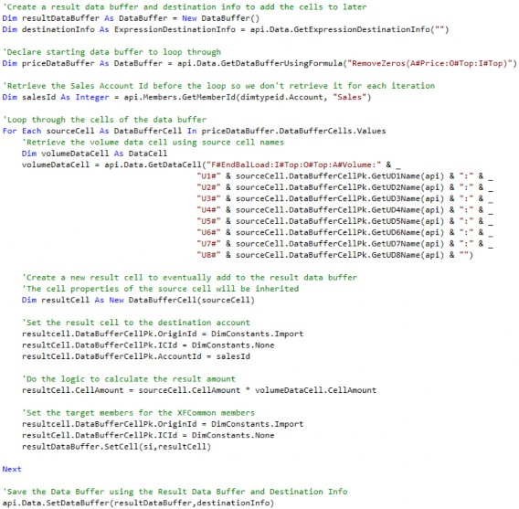
The above example replicates the result of the earlier api.Data.Calculate(“A#Sales = A#Price * A#Volume”) example. Think of the DBCL as the long-hand version of the ADC function. While using this Method is unnecessarily complex for this use case, it helps to illustrate the key components. Let’s break it down.
The Data Buffer Cell Loop › The Recipe › Example
ResultDataBuffer
We’ve already learned that a Data Buffer is just a Dictionary of data cells, like a spreadsheet. The Result Data Buffer is an empty Dictionary (spreadsheet) to which we will add data cells later in the process.
The Data Buffer Cell Loop › The Recipe › Example
DestinationInfo
The Destination Info object is a required parameter in the SetDataBuffer function, which is used – at the end – to write the data to the Cube. This object will specify Dimension Members via a string, to which the Result Data Buffer will be written to. This part is the equivalent of the left side of the formula in an ADC function.
Our example passes in an empty string for the Member Filter, as we will define all destination Dimensions in the result cell. Later in this chapter, I will explain how to use DestinationInfo instead of setting the Dimensions for each result cell.
The Data Buffer Cell Loop › The Recipe › Example
GetDataBufferUsingFormula
To state the obvious, the Data Buffer Cell Loop requires a Data Buffer to loop through. This can be done using one of two API functions.
api.Data.GetDataBufferapi.Data.GetDataBufferUsingFormula
Your author prefers to use the api.Data.GetDataBufferUsingFormula as it allows formulas (Data Buffer math) and the use of functions like FilterMember and RemoveZeros.
Think of this part as the right side of the formula in the ADC function. Typically, one of the Member Script operands is used to define the loop. For this example, we could have theoretically looped through the A#Volume Data Buffer instead of the A#Price, or looped through the result of A#Price * A#Volume, and achieved the same result.The Data Buffer Cell Loop › The Recipe › Example
For, Each Loop
The Data Buffer from the previous step is a Dictionary of data cells. A For, Each loop allows looping through each data cell in the Dictionary. The idea is that we will execute some logic on the source data cell properties and/or use the Source Data Cell Amount in a Calculation.
The Data Buffer Cell Loop › The Recipe › Example
Result Cell
As the loop iterates through the source cells, result cells will be added to the Result Data Buffer. Before that can happen, the result cell must first be brought into existence. When brought into existence, that result cell will be completely devoid of any properties such as Dimension Members, Cell Amount, and Cell Status. Each of those properties must be defined before we try to write the cell to the Cube, or an error will be thrown. Instead of defining each property individually, it can sometimes be useful to have the result cell inherit the properties of the source cell.
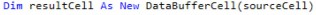
At this point, the result cell and source cell are identical copies, with the idea being the result cell properties will be modified without impacting the source cell. This often makes sense because the Result Data Buffer usually shares most of its Dimension properties with the Source Data Buffers. In the api.Data.Calculate(“A#Cost = A#Price * A#Volume”) example, the Dimension properties are identical between all three with the exception of Account.
Note: The result cell needs to be declared inside the loop as New so that the same cell is not reused for each loop iteration. |
The Data Buffer Cell Loop › The Recipe › Example
GetDataCell
Performing Calculations will require numbers from other data cells. To get numbers from other data cells, the api.Data.GetDataCell function is deployed. This function requires a Member Script or a DataCellPk, both of which define all Account-level Dimensions. The Data Unit is inherited from the POV and can be overwritten if there is a need to retrieve data outside the current Data Unit being processed by adding those Dimensions to the Member Script or DataCellPk.
Again, we can use some information from the source cell to help us define those Dimensions. There are a couple of options for how we can retrieve the data cell:
Use the source cell Member names.
Use the source cell IDs to build a
DataCellPk.Convert the source cell
DataBufferCellPkto a Member Script.
The Data Buffer Cell Loop › The Recipe › Example › GetDataCell
Use the Source Cell Member Names
In this Method, a full Member Script string will be passed into the GetDataCell function.
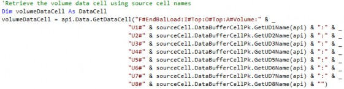
Note: Line breaks are used via the &_ syntax to increase readability. |
All Account-level Dimensions are defined, and source cell information is retrieved using the GetDimensionName function. Note that for the Origin and IC Dimensions, we cannot use the Member names from the source cell because they have been defined in the Member Script within the GetDataBuffer function and would be defined as XFCommon. Instead, we define those as hardcoded values.
The Data Buffer Cell Loop › The Recipe › Example › GetDataCell
Use the Source Cell IDs to Build a DataCellPk
In this Method, a new DataCellPk object will be created, manipulated, and then passed into the api.Data.GetDataCellFunction.
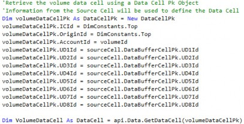
Each Dimension ID for the new DataCellPk must be defined. The Origin and IC Dimensions will be defined using DimConstants and the Account Member set to the Volume Account Member ID, which was retrieved before starting the loop to save having to retrieve the same value for each loop iteration. The Source Cell Member IDs are used for the UD Dimensions to stay consistent with the source cell.
The Data Buffer Cell Loop › The Recipe › Example › GetDataCell › Use the Source Cell IDs to Build a DataCellPk
DimConstants
The DimConstants class can be called to retrieve IDs for default or system Dimension Members. For example, the Origin contains a fixed list of Members that cannot be edited. The DimConstants class serves as a way to easily retrieve those IDs since they will exist in every Cube.
The Data Buffer Cell Loop › The Recipe › Example › GetDataCell › Use the Source Cell IDs to Build a DataCellPk
Api.Members.GetMemberId
Member IDs for User-created Members within any Dimension can be retrieved using the api.Members.GetMemberID function. The DimTypeID and Member name must be passed into the function.
The Data Buffer Cell Loop › The Recipe › Example › GetDataCell
Convert the Source Cell DataBufferCellPk to a Member Script
Yet another way to retrieve a data cell is to build a Member Script using a MemberScriptBuilder object. The Source Cell Dimension information can be directly converted to a Member Script using the ApplyDataBufferCellPkToMemberScriptBuilder function.
As each source cell is looped through, the DataBufferCellPk is known so that object can be used to create our Member Script, which can then be passed into the GetDataCell function.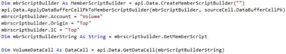
A new MemberScriptBuilder object is created, and then the ApplyDataBufferCellPkToMemberScriptBuilder function is used to transfer the data cell information from the source cell to the MemberScriptBuilder. At this point, the MemberScriptBuilder and the source data cell are identical. Then the MemberScriptBuilder’s Members are manipulated to get the desired result.
The Data Buffer Cell Loop › The Recipe › Example › GetDataCell
Performance
Each of the three Methods described to retrieve a data cell produces the same result. There are, however, some slight performance differences. Using the MemberIDs to define a DataCellPk will perform the best due to the source cell IDs already being in memory. The MemberSciptBuilder should perform second-best and using SourceCell names to define the Member Script should perform the worst as the names need to be retrieved and then converted into MemberIDs.
Ultimately, performance results may vary based on the use case. For example, source cell names may be used for other logic – and already declared – which would require no further processing time to use them in a GetDataCell.
It’s always good to have options.
The Data Buffer Cell Loop › The Recipe › Example
Setting the ResultCellPk
Back to our example, we now need to manipulate the Dimension details of the result cell. If the result cell was initially set with the source cell information, much of the work has already been done. The result cell can be manipulated by setting the Dimension Member IDs using the api.Members.GetMemberID function.
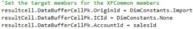
This can also be done via the DestinationInfo object, which will set all of the result cells in the Result Data Buffer at once.
Both Methods outlined above for setting result cell Dimension Members will have the same result. Setting the result cells within the loop should be used when needing to perform logic to determine the result cell destination. For example:
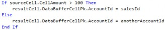
All else being equal, using DestinationInfo performs better because it is applied to the entire
Data Buffer, converting all the cells within it at once. Again, it’s good to have options.
Note: DestinationInfo will overwrite setting the Dimensions of the individual cells if both are used for the same Dimension. |
The Data Buffer Cell Loop › The Recipe › Example
Setting the Result Cell Amount
Now, it’s time to do the math. The result cell’s Amount will be set using the source cell (Price) multiplied by the Volume data cell.
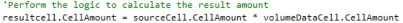
The Data Buffer Cell Loop › The Recipe › Example
Adding the Result Cell to the Result Data Buffer
The result data cell is then added to the Result Data Buffer using the SetCell function.
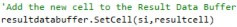
AccumulateIfCellAlreadyExists is an optional True/False argument that can be passed into the function. This option defaults to False, which means that if you have cells with identical destination Dimensions (CellPks), the last one added will overwrite. This should be set to True if there is a potential for identical data intersections (Data Buffer Cell Pks) to be added to the Result Data Buffer. Otherwise, the last cell added will overwrite.
Figure 4.1
The Data Buffer Cell Loop › The Recipe › Example
Finishing the Loop and Setting the Data Buffer
After all the source data cells have been looped over, the Result Data Buffer will be filled with cells. Those cells are committed to the Cube via the SetDataBuffer function. The DestinationInfo object is passed in, as well as optional arguments for Dimension filters which is similar to how we use filters in the ADC function.
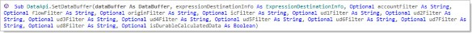
Figure 4.2
The Data Buffer Cell Loop › The Recipe
Other Considerations
The example used above was fairly simple and straightforward so that the main components of the DBCL could be illustrated. There are a few additional variations that can be used that may prove useful in some situations.
The Data Buffer Cell Loop › The Recipe › Other Considerations
Setting Cell Status
The Cell Status for the Result Data Buffer Cell can be set using the CreateDataCellStatus function.
Figure 4.3
The CreateDataCellStatus function accepts two arguments, both Booleans, for IsNoData and
IsInvalid data. If you need to save data to the Cube, use False for both.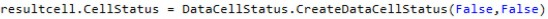
This function should be used if looping over a Data Buffer that contains NoData cells (and they haven’t been purposely removed with the RemoveZeros function). It can also be used if the result cell does not inherit the source cell information since a new result cell is created with a Cell Status of NoData by default.
This function is also useful when trying to remove or clear data that was either imported or entered through a Form. This data can be looped over, and the cells set to NoData = True, which – when written back to the Cube – will effectively clear it.Below is an example of using a DBCL to clear data in O#Forms.
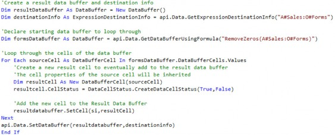
The Data Buffer Cell Loop › The Recipe › Other Considerations
SetDimension Extension
In the above example, the Dimensions of the result cells were defined by setting their MemberIDs.
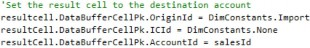
There is also a SetDimension extension that can be used to achieve the same result.
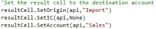
There is a slight performance benefit to using the MemberID Methods since OneStream needs to perform the extra step of converting names to IDs in the Set Method.
The Data Buffer Cell Loop › The Recipe
When to Use the DBCL
If the previous example produces the same result as the ADC function, what is the point of using it? The reason for using the DBCL approach comes down to flexibility and performance.
The Data Buffer Cell Loop › The Recipe › When to Use the DBCL
Flexibility
The DBCL affords the ability to filter, analyze, or otherwise manipulate each result cell before it is added to the Result Buffer. This opens up endless possibilities for applying logic that can’t be applied using the ADC function. Two examples are:
Transforming Dimensions
Analyzing Cell Status or Cell Amounts
The Data Buffer Cell Loop › The Recipe › When to Use the DBCL › Flexibility
Transforming Dimensions
Result cells may need to be transformed to different Dimension Members using a mapping table or some other mechanism. This can be especially useful when data is pulled from other Cubes with unrelated Dimensions or non-Cube data from Staging, Register, or External Tables.
The Data Buffer Cell Loop › The Recipe › When to Use the DBCL › Flexibility
Analyzing Cell Status or Cell Amounts
The CellStatus or CellAmount of Data Buffer Cells can be analyzed and used within logic.
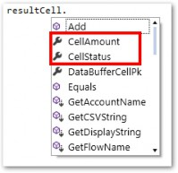
Figure 4.4
The Data Buffer Cell Loop › The Recipe › When to Use the DBCL
Performance
Using the DBCL approach – when the ADC function could have otherwise been used – will perform slightly worse. However, one DBCL could replace what would take multiple ADC functions, which would improve overall performance. This is because multiple result cells can be created inside the loop and added to the Result Data Buffer, which is then written once to the database where multiple ADC functions would write multiple times.
The Data Buffer Cell Loop › The Recipe › When to Use the DBCL › Performance
Example of Setting Multiple Result Cells
Curly wants to budget Returns as a function of Sales. Historically, Returns have been 1% of Sales. In a rare moment of intelligence, Curly decides that the logic for Returns can exist within the same Calculation as Sales. He adds the Returns Calculation logic to the existing DBCL for Sales.
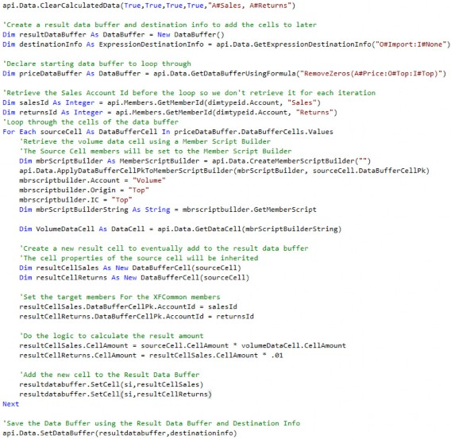
Notice that two result cells are declared with different logic setting the Cell Amounts for each. Also, notice that A#Returns was added to the Account filter in the ClearCalculateData function at the top.
The Data Buffer Cell Loop › The Recipe › When to Use the DBCL
DBCL vs. Eval
The Eval function, used in conjunction with the ADC, can be used almost interchangeably with the DBCL. The choice of which to use mostly comes down to User preference, although there can be situations where a DBCL is clearly the better choice. Let’s use the Double Unbalanced example mentioned in the previous chapter.
For this example, Curly needs to budget Shipping Expenses – across both Products and Cost Centers – by taking Volume multiplied by Shipping Cost Drivers.
Shipping Cost Drivers are entered across the various Shipping Cost Centers and Volumes are entered by Product.
Curly starts with a simple api.Data.Calculate, multiplying the A#Volume by
A#ShippingDrivers.
api.Data.Calculate(“A#ShippingExpense = A#Volume * A#ShippingDrivers”)
This Calculation produces no results to Curly’s dismay. Viewing the Drivers in a Cube View, it is clear that their dimensionality does not align.
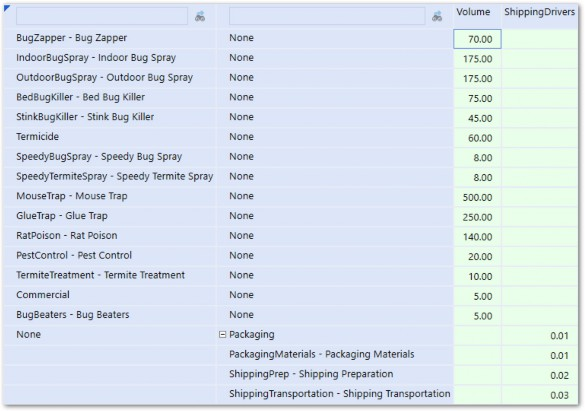
Figure 4.5
Next, Curly tries to align the Dimensions within the Calculation by adding UD1 and UD2 to the source and destination Member Scripts.
api.Data.Calculate(“A#ShippingExpense:U1#None:U2#None = A#Volume:U1#Top:U2#Top * A#ShippingDrivers:U1#Top:U2#Top”)The Calculation now produces results, but they aren’t correct and lack detail for Product and Cost Center. Trying one more time, Curly rewrites the Calculation.
api.Data.Calculate(“A#ShippingExpense = A#Volume:U2#None * A#ShippingDrivers:U1#None”)
Curly runs this Calculation and receives an Unbalanced Data Buffer error and is now thoroughly confused.
After doing the Curly shuffle for a few minutes to get his brain working, he decides to use a DBCL to solve the problem.
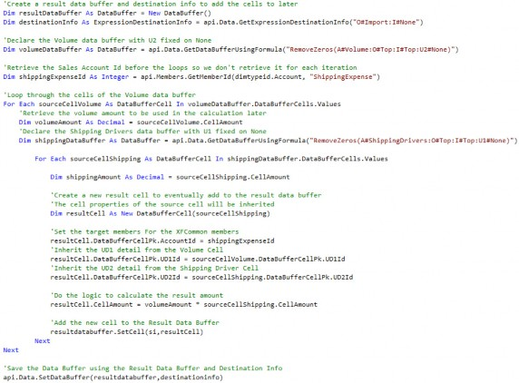
To get the Calculation to work, Curly first looped through the A#Volume Data Buffer and then created another loop through the A#ShippingDrivers Data Buffer nested within the first loop. Within the second loop, the result cell’s UD1 is inherited from the Volume cell and UD2 is inherited from the ShippingDrivers cell.
The Shipping Expense Account is now populated with detail for both UD1 and UD2.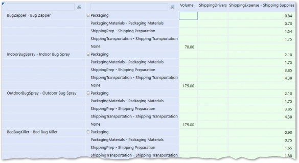
Figure 4.6
Accomplishing this with an Eval or Eval2 is also possible but would be much more complex.
The Data Buffer Cell Loop › The Recipe
Guidelines
The flexibility provided by the DBCL presents the opportunity for a lot of variation in the way it can be used. Regardless of the use case, the below guidelines should be adhered to.
The Data Buffer Cell Loop › The Recipe › Guidelines
Loop Definition
The term Data Buffer Cell Loop assumes that a Data Buffer is defining the loop. Looping over a Data Buffer makes sense in most cases because:
Only cells containing data will be looped through.
Dimensionality from the source cells can be transferred to the result cells.
This is not, however, necessary as any list could be looped through. For example, a list of Members could be retrieved using the api.Members.GetMembersUsingFilter function and then looped over. This should only be done in rare cases when data needs to be generated for each Member within the list. This Method is limited because only one Dimension Member can be supplied to the result cells. Rows of a custom table could also be looped through with fields from the rows being provided to the result cells.
Also, be careful when looping over Data Buffers that contain a high volume of cells. Use the Count function to log the total number of cells that are being looped over, and limit the scope using filters if possible.
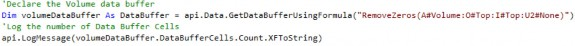
The Data Buffer Cell Loop › The Recipe › Guidelines
Out of the Loop
It’s important to be very judicial in regard to what is done inside the loop versus outside the loop. Anything done inside the loop will be repeated for every iteration of the loop, which can be hundreds or thousands of times. Things like Dimension Member IDs can be retrieved before the loop if they do not change for each iteration.
For example, if the Calculation required a Data Cell Amount for a global inflation rate, it is likely that this rate will remain the same for each iteration of the loop. Retrieving this data cell before starting the loop will ensure that processing time isn’t wasted retrieving the same number over and over again.
The Data Buffer Cell Loop › The Recipe › Guidelines
Write Once
One of the most expensive actions when processing is writing to the database. To optimize performance, cells should be added to the Result Data Buffer in memory, and the SetDataBuffer function is called once, after the loop completes. Even though you may get the correct results, it is never a good idea to use an api.Data.Calculate, api.Data.SetDataBuffer, or api.Data.SetDataCell inside the loop.
The Data Buffer Cell Loop
Conclusion
The api.Data.Calculate function, introduced in the last chapter, is powerful but somewhat limited. When it proves inadequate for more complex Calculations, having the Data Buffer Cell Loop in your Calculation-writing arsenal will prove to be a powerful weapon. The DBCL allows logic to be applied at the individual cell level giving you ultimate flexibility and precision in Calculations. Multiple result cells can also be created inside the same loop, affording you the capability to combine Calculations using the same inputs, which can improve performance.
In this chapter, the basic concepts, and components of the DBCL were explained as well as several examples of how it can be applied for real-world solutions. Mastering this technique will allow you to tackle the most complex Calculation requirements. If our lovable stooge – Curly – can learn it, you can too!